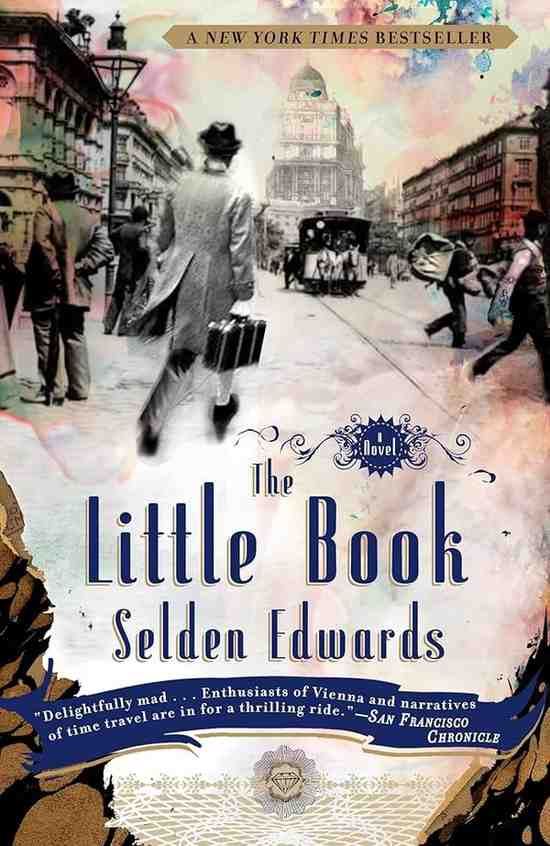
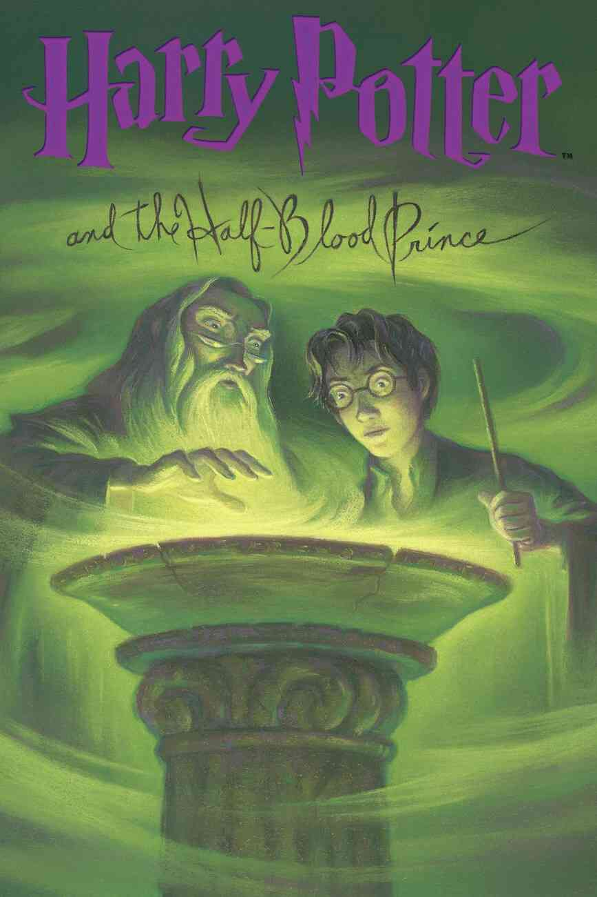
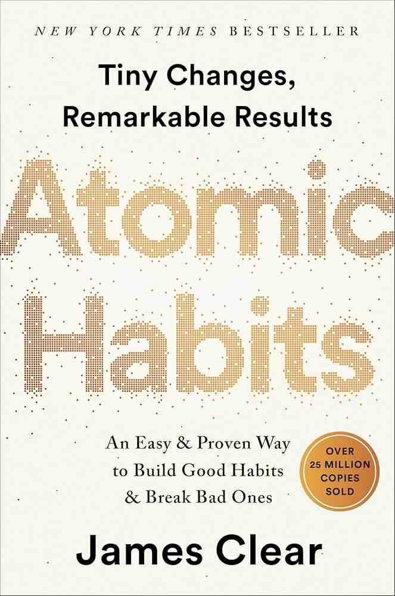
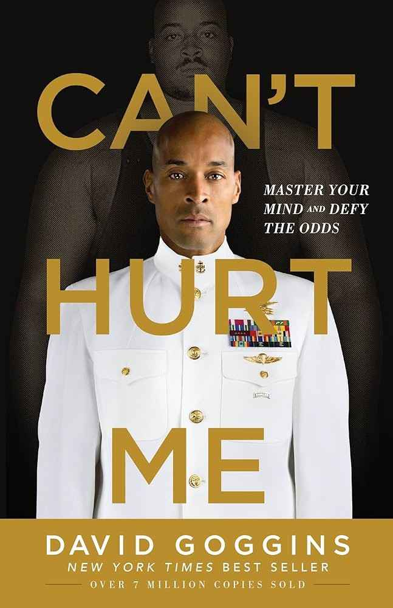

My little brother, Julian, and I took a trip to Coast Guard beach in Cape Cod this summer. There were seals playing in the waves which was really cool for us to see - we've only seen seals in zoos before.
I love to start my day with a walk to Harvard square and
getting a breakfast sandwich and iced latte at Tatte Bakery & Cafe.
The walk is such a good way to wake me up, and the vibes inside
of Tatte are awesome. The food is really good too... and if I don't get
a breakfast sandwich, I get a turkey sandwich with bacon, lettuce,
avocado, and tomato! You should definitely go check it out.
Link to Tatte's website
| Name | Cover | Author | Synopsis |
|---|---|---|---|
| The Little Book |  | Selden Edwards | An eccentric man named Wheeler suddenly finds himself in 1897 Vienna. The reader follows his journey as he attempts to fit in, as well as meet some notable historical figures. |
| Harry Potter and the Half-Blood Prince |  | J.K. Rowling | Dumbledore requests Harry for private lessons as he intends to unravel many of the secrets behind Voldemort's past and ultimately his destruction. |
| Atomic Habits |  | James Clear | James Clear highlights the importance of habits in our daily lives as well as provide evidence-based methods for how to make positive habits stick and get rid of negative ones. |
| Can't Hurt Me |  | David Goggins | David Goggins, former Navy SEAL, recounts his life story and the challenges he's overcome and the bulletproof mindset that helped him along the way. |